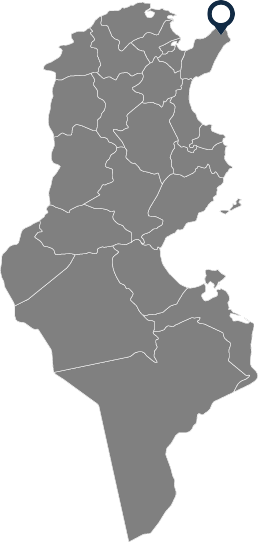

Recommended beaches
El Haouaria caves
El Haouaria
2h 2min from Tunis
2h 41min from Sousse
El Haouaria Caves Beach in Tunisia features clear blue waters, rugged cliffs, and intriguing sea caves, perfect for swimming and exploring.
Ras El Rmal
Djerba

30min from Houmet El Souk
Ras El Rmal in Djerba, Tunisia, is known for its vast sandy beaches, clear turquoise waters, and tranquil atmosphere. It's ideal for swimming, sunbathing, and observing local wildlife, including flamingos.
Korbous
Nabel

1h 5min from Tunis
1h 55min from Sousse
Korbous Beach in Tunisia is famed for its natural hot springs, clear waters, and scenic cliffs. It's a perfect spot for relaxation, swimming, and enjoying therapeutic baths.
Mahdia
Mahdia
2h 34min from Tunis
1h 11min from Sousse
Mahdia Beach features stunning white sands and clear turquoise waters, ideal for swimming and sunbathing. Its historic town adds cultural charm, making it a must-visit for tourists.